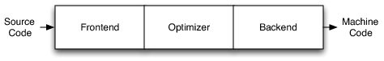

Clang Tutorial: Finding Declarations
Table of Contents
Clang is a very good C/C++ compiler, and it provides great extensibility by its various API to take advantage of it's syntax parsing, AST construction, semantics analysis, optimization, assembly generation and JIT compilation. Here let's have some fun playing with Clang and build a Clang tool to list all the declarations in a given file.
1 The "Hello World" Program
Let's try to use Clang to write a "Hello World" program: Find all the declarations in a given source file.
Given source file below:
class MyClass { int foo; public: void bar() {} }; MyClass foobar() { MyClass a; return a; }
Run our program to find all declarations:
$ ./find-decl test.cpp -- Found MyClass at /home/.../workspace/llvm/debug/Debug+Asserts/bin/find-test.cpp:1:1 Found MyClass::foo at /home/.../workspace/llvm/debug/Debug+Asserts/bin/find-test.cpp:2:3 Found MyClass::bar at /home/.../workspace/llvm/debug/Debug+Asserts/bin/find-test.cpp:4:3 Found foobar at /home/.../workspace/llvm/debug/Debug+Asserts/bin/find-test.cpp:7:1 Found a at /home/.../workspace/llvm/debug/Debug+Asserts/bin/find-test.cpp:8:3
Note: Any argument after -- will be passed to Clang. You can use that to specify arguments like include path -I/path/to/my/include or macro definition -DMY_MACRO.
Next let's write the program.
2 Building clang
First build clang:
- Get the source code from svn or git repository:
git clone http://llvm.org/git/llvm.git src git clone http://llvm.org/git/clang.git src/tools/clang
- Configure and build using
make:
mkdir debug && cd debug ../configure # add --enable-optimized --disable-assertions for release build make # this would take quite some time
You can also use make install to install your built version to the system.
3 LibTooling
LibTooling is the C++ interface Clang provided. It is very useful when you want to have full control over AST (e.g. static analysis), or to implement a refactoring tool. There are other interfaces like LibClang and Clang Plugins as well. For detailed information you can refer to Clang Tooling document.
For our "Hello World" program - finding all declarations, using LibTooling is the easiest way.
4 The Entry of Everything
Let's start with the main function first:
#include "DeclFindingAction.h" #include "clang/Tooling/CommonOptionsParser.h" #include "clang/Tooling/Tooling.h" static llvm::cl::extrahelp CommonHelp(clang::tooling::CommonOptionsParser::HelpMessage); llvm::cl::OptionCategory FindDeclCategory("find-decl options"); static char FindDeclUsage[] = "find-decl <source file>"; int main(int argc, const char **argv) { clang::tooling::CommonOptionsParser option(argc, argv, FindDeclCategory, FindDeclUsage); auto files = option.getSourcePathList(); clang::tooling::ClangTool tool(option.getCompilations(), files); return tool.run(clang::tooling::newFrontendActionFactory<DeclFindingAction>().get()); }
This code is quite self-explained. We create an OptionCategory, 1
use CommonOptionsParser to parse command line arguments for us, 2
then feed source files to ClangTool, 3
and run it with our own DeclFindingAction.
5 The Compiler Frontend
Like most compilers, LLVM is a three-phase compiler. Clang is its C, C++, Objective C and Objective C++ frontend. 4

The frontend will parse the source code, check for syntax error and build the
abstract syntax tree (AST). Let's create our own FrontendAction: 5
#pragma once #include "DeclFinder.h" #include "clang/Frontend/FrontendAction.h" #include "clang/Frontend/CompilerInstance.h" #include <memory> class DeclFindingAction : public clang::ASTFrontendAction { public: std::unique_ptr<clang::ASTConsumer> CreateASTConsumer(clang::CompilerInstance &CI, clang::StringRef) final { return std::unique_ptr<clang::ASTConsumer>( new DeclFinder(CI.getSourceManager())); } };
Our frontend action will only consume AST and find all declarations, it
is inherited from ASTFrontendAction, 6
and create our own AST consumer via FrontendAction::CreateASTConsumer. 7
AST will be consumed by our ASTConsumer - DeclFinder. 8
6 AST: Abstract Syntax Tree
7 AST Consumer
The ASTConsumer will read AST. It provides many interfaces to be overridden
when certain type of AST node has been parsed, or after all the translation unit
has been parsed.
We will override ASTConsumer::HandleTranslationUnit to read the AST after we have
all the information needed of the file. 11
#pragma once #include "DeclVisitor.h" #include "clang/AST/ASTConsumer.h" #include "clang/AST/ASTContext.h" #include "clang/Basic/SourceManager.h" class DeclFinder : public clang::ASTConsumer { DeclVisitor Visitor; public: DeclFinder(clang::SourceManager &SM) : Visitor(SM) {} void HandleTranslationUnit(clang::ASTContext &Context) final { Visitor.TraverseDecl(Context.getTranslationUnitDecl()); } };
We can process each declaration (Decl) in the our ASTConsumer, but that will
require us to identify the actual type of each Decl instance: is it a
function declaration, a type declaration or a variable declaration?
Clang provides us the RecursiveASTVisitor to identify the different type of
declarations and statements. 12
8 AST Visitor
This is where the work is done: we overwrite the
RecursiveASTVisitor::VisitNamedDecl method to find all the named
declaration, print its qualified name and definition location.
#pragma once #include "clang/AST/RecursiveASTVisitor.h" #include "clang/Basic/SourceManager.h" #include "llvm/Support/raw_ostream.h" #include <string> #include <sstream> class DeclVisitor : public clang::RecursiveASTVisitor<DeclVisitor> { clang::SourceManager &SourceManager; public: DeclVisitor(clang::SourceManager &SourceManager) : SourceManager(SourceManager) {} bool VisitNamedDecl(clang::NamedDecl *NamedDecl) { llvm::outs() << "Found " << NamedDecl->getQualifiedNameAsString() << " at " << getDeclLocation(NamedDecl->getLocStart()) << "\n"; return true; } private: std::string getDeclLocation(clang::SourceLocation Loc) const { std::ostringstream OSS; OSS << SourceManager.getFilename(Loc).str() << ":" << SourceManager.getSpellingLineNumber(Loc) << ":" << SourceManager.getSpellingColumnNumber(Loc); return OSS.str(); } };
Above source code introduced the SourceManager class. 13
As its name suggested, it manages all the source files.
We first get the location of a declaration, then translate it into human readable content.
The llvm::outs() is similiar to the std::cout, but it's suggested to use
llvm::outs() instead of std::cout according to the LLVM Coding Standard. 14
9 Put It All Together
Here is our makefile:
CLANG_LEVEL := ../../.. TOOLNAME = find-decl include $(CLANG_LEVEL)/../../Makefile.config LINK_COMPONENTS := $(TARGETS_TO_BUILD) asmparser bitreader support mc option USEDLIBS = clangTooling.a clangFrontend.a clangSerialization.a clangDriver.a \ clangRewriteFrontend.a clangRewrite.a \ clangParse.a clangSema.a clangAnalysis.a \ clangAST.a clangASTMatchers.a clangEdit.a clangLex.a clangBasic.a include $(CLANG_LEVEL)/Makefile
All the source code above should be put under
${llvm_src}/tools/clang/tools/clang-playground/find-decl/.
And put another makefile in
${llvm_src}/tools/clang/tools/clang-playground/:
CLANG_LEVEL := ../.. include $(CLANG_LEVEL)/../../Makefile.config PARALLEL_DIRS := find-decl DIRS := include $(CLANG_LEVEL)/Makefile
Edit Makefile in ${llvm_src}/tools/clang/tools/, add clang-playground to
OPTIONAL\PARALLEL\DIRS so Clang makefile can find our project.
Now you should be able to build our project along with Clang. The built out binary should
be located in debug/Debug+Asserts/bin/.
10 The Glitch
Wait! When there is a #include <vector> in the source file, our find-decl will
print out all the declarations in that included file, because these included files
are parsed and consumed as a whole with our source file. To fix this, we need to
check if the declarations are defined in our source file:
void HandleTranslationUnit(clang::ASTContext &Context) final { auto Decls = Context.getTranslationUnitDecl()->decls(); for (auto &Decl : Decls) { const auto& FileID = SourceManager.getFileID(Decl->getLocation()); if (FileID != SourceManager.getMainFileID()) continue; Visitor.TraverseDecl(Decl); } }
This is the improved logic. We find out the file ID of each declaration belongs to, compare it with the main file ID. If they are equal, that means it's defined in our source file.
All the source code can be found at here.
Footnotes:
CommonOptionsParser, http://clang.llvm.org/doxygen/classclang_1_1tooling_1_1CommonOptionsParser.html
FrontendAction, http://clang.llvm.org/doxygen/classclang_1_1FrontendAction.html
ASTFrontendAction, http://clang.llvm.org/doxygen/classclang_1_1ASTFrontendAction.html
FrontendAction::CreateASTConsumer, http://clang.llvm.org/doxygen/classclang_1_1FrontendAction.html#a9277d23d8eec19dad5a9aeef721cd6a3
ASTConsumer::HandleTranslationUnit, http://clang.llvm.org/doxygen/classclang_1_1ASTConsumer.html#a2bea2db1d0e8af16c60ee7847f0d46ff
RecursiveASTVisitor, http://clang.llvm.org/doxygen/classclang_1_1RecursiveASTVisitor.html
LLVM Coding Standard, http://llvm.org/docs/CodingStandards.html